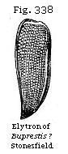
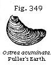

{kind=link}
{kind=link}
{kind=link}

The Student’s Elements of Geology
The Purbeck Beds a Member of the Jurassic Group. — Subdivisions of that Group. — Physical Geography of the Oolite in England and France. — Upper Oolite. — Purbeck Beds. — New Genera of fossil Mammalia in the Middle Purbeck of Dorsetshire. — Dirt-bed or ancient Soil. — Fossils of the Purbeck Beds. — Portland Stone and Fossils. — Kimmeridge Clay. — Lithographic Stone of Solenhofen. — Archæopteryx. — Middle Oolite. — Coral Rag. — Nerinæa Limestone. — Oxford Clay, Ammonites and Belemnites. — Kelloway Rock. — Lower, or Bath, Oolite. — Great Plants of the Oolite. — Oolite and Bradford Clay. — Stonesfield Slate. — Fossil Mammalia. — Fuller’s Earth. — Inferior Oolite and Fossils. — Northamptonshire Slates. — Yorkshire Oolitic Coal-field. — Brora Coal. — Palæontological Relations of the several Subdivisions of the Oolitic group.
Classification of the Oolite.—Immediately below the Hastings Sands we find in Dorsetshire another remarkable fresh-water formation, called the Purbeck, because it was first studied in the sea-cliffs of the peninsula of Purbeck in that county. These beds are for the most part of fresh-water origin, but the organic remains of some few intercalated beds are marine, and show that the Purbeck series has a closer affinity to the Oolitic group, of which it may be considered as the newest or uppermost member.
In England generally, and in the greater part of Europe, both the Wealden and Purbeck beds are wanting, and the marine cretaceous group is followed immediately, in the descending order, by another series called the Jurassic. In this term, the formations commonly designated as “the Oolite and Lias” are included, both being found in the Jura Mountains. The Oolite was so named because in the countries where it was first examined the limestones belonging to it had an Oolitic structure (see p. 37). These rocks occupy in England a zone nearly thirty miles in average breadth, which extends across the island, from Yorkshire in the north-east, to Dorsetshire in the south-west. Their mineral characters are not uniform throughout this region; but the following are the names of the principal subdivisions observed in the central and south-eastern parts of England.
| Upper | a. Purbeck beds. b. Portland stone and sand. c. Kimmeridge clay. |
| Middle | d. Coral rag. e. Oxford clay, and Kelloway rock. |
| Lower | f. Cornbrash and Forest marble. g. Great Oolite and Stonesfield slate. h. Fuller’s earth. i. Inferior Oolite. |
The Upper Oolitic system of the above table has usually the Kimmeridge clay for its base; the Middle Oolitic system, the Oxford clay. The Lower system reposes on the Lias, an argillo-calcareous formation, which some include in the Lower Oolite, but which will be treated of separately in the next chapter. Many of these subdivisions are distinguished by peculiar organic remains; and, though varying in thickness, may be traced in certain directions for great distances, especially if we compare the part of England to which the above-mentioned type refers with the north-east of France and the Jura Mountains adjoining. In that country, distant above 400 geographical miles, the analogy to the accepted English type, notwithstanding the thinness or occasional absence of the clays, is more perfect than in Yorkshire or Normandy.
Physical Geography.—The alternation, on a grand scale, of distinct formations of clay and limestone has caused the oolitic and liassic series to give rise to some marked features in the physical outline of parts of England and France. Wide valleys can usually be traced throughout the long bands of country where the argillaceous strata crop out; and between these valleys the limestones are observed, forming ranges of hills or more elevated grounds. These ranges terminate abruptly on the side on which the several clays rise up from beneath the calcareous strata.
Fig. 298 will give the reader an idea of the configuration of the surface now alluded to, such as may be seen in passing from London to Cheltenham, or in other parallel lines, from east to west, in the southern part of England. It has been necessary, however, in this drawing, greatly to exaggerate the inclination of the beds, and the height of the several formations, as compared to their horizontal extent.
It will be remarked, that the lines of steep slope, or escarpment, face towards the west in the great calcareous eminences formed by the chalk and the Upper, Middle, and Lower Oolites; and at the base of which we have respectively the Gault, Kimmeridge clay, Oxford clay, and Lias. This last forms, generally, a broad vale at the foot of the escarpment of inferior Oolite, but where it acquires considerable thickness, and contains solid beds of marlstone, it occupies the lower part of the escarpment.
The external outline of the country which the geologist observes in travelling eastward from Paris to Metz, is precisely analogous, and is caused by a similar succession of rocks intervening between the tertiary strata and the Lias; with this difference, however, that the escarpments of Chalk, Upper, Middle, and Lower Oolites face towards the east instead of the west. It is evident, therefore, that the denuding causes (see p. 105) have acted similarly over an area several hundred miles in diameter, removing the softer clays more extensively than the limestones, and causing these last to form steep slopes or escarpments wherever the harder calcareous rock was based upon a more yielding and destructible formation.
Purbeck Beds.—These strata, which we class as the uppermost member of the Oolite, are of limited geographical extent in Europe, as already stated, but they acquire importance when we consider the succession of three distinct sets of fossil remains which they contain. Such repeated changes in organic life must have reference to the history of a vast lapse of ages. The Purbeck beds are finely exposed to view in Durdlestone Bay, near Swanage, Dorsetshire, and at Lulworth Cove and the neighbouring bays between Weymouth and Swanage. At Meup’s Bay, in particular, Professor E. Forbes examined minutely, in 1850, the organic remains of this group, displayed in a continuous sea-cliff section, and it appears from his researches that the Upper, Middle, and Lower Purbecks are each marked by peculiar species of organic remains, these again being different, so far as a comparison has yet been instituted, from the fossils of the overlying Hastings Sands and Weald Clay.
Upper Purbeck.—The highest of the three divisions is purely fresh-water, the strata, about fifty feet in thickness, containing shells of the genera Paludina, Physa, Limnæa, Planorbis, Valvata, Cyclas, and Unio, with Cyprides and fish. All the species seem peculiar, and among these the Cyprides
are very abundant and characteristic (see Fig. 299, a, b, c.)
The stone called “Purbeck Marble,” formerly much used in ornamental architecture in the old English cathedrals of the southern counties, is exclusively procured from this division.
Middle Purbeck.—Next in succession is the Middle Purbeck, about thirty feet thick, the uppermost part of which consists of fresh-water limestone, with cyprides, turtles, and fish, of different species from those in the preceding strata. Below the limestone are brackish-water beds full of Cyrena, and traversed by bands abounding in Corbula and Melania. These are based on a purely marine deposit, with Pecten, Modiola, Avicula, and Thracia. Below this, again, come limestones and shales, partly of brackish and partly of fresh-water origin, in which many fish, especially species of Lepidotus and Microdon radiatus, are found, and a crocodilian reptile named Macrorhynchus. Among the mollusks, a remarkable ribbed Melania, of the section Chilina, occurs.
Immediately below is a great and conspicuous stratum, twelve feet thick, formed of a vast accumulation of shells of Ostrea distorta (Fig. 300), long familiar to geologists under the local name of “Cinder-bed.” In the uppermost part of
this bed Professor Forbes discovered the first echinoderm (Fig. 301) as yet known in the Purbeck series, a species of Hemicidaris, a genus characteristic of the Oolitic period, and scarcely, if at all, distinguishable from a previously known Oolitic fossil. It was accompanied by a species of Perna. Below the Cinder-bed fresh-water strata are again seen, filled in many places with species of Cypris (Fig. 302, a, b, c), and with Valvata, Paludina, Planorbis, Limnæa, Physa (Fig. 303), and Cyclas, all different from any occurring higher in the series. It will be seen that Cypris fasciculata (Fig. 302, b) has tubercles at the end only of each valve, a character by which it can be immediately recognised. In fact, these minute crustaceans, almost as frequent in some of the shales as plates of mica in a micaceous sandstone, enable geologists at once to identify the Middle Purbeck in places far from the Dorsetshire cliffs, as, for example, in the Vale of Wardour in Wiltshire. Thick beds of chert occur in the Middle Purbeck filled with mollusca and cyprides of the genera already enumerated, in a beautiful state of preservation, often converted into chalcedony. Among these Professor Forbes met with gyrogonites (the spore-vessels of Chara), plants never until 1851 discovered in rocks older than the Eocene. About twenty feet below the “Cinder-bed” is a stratum two or three inches thick, in which fossil mammalia presently to be mentioned occur, and beneath this a thin band of greenish shales, with marine shells and impressions of leaves like those of a large Zostera, forming the base of the Middle Purbeck.
Fossil Mammalia of the Middle Purbeck.—In 1852,* after alluding to the discovery of numerous insects and air-breathing mollusca in the Purbeck strata, I remarked that, although no mammalia had then been found, “it was too soon to infer
* Elements of Geology, 4th edition.
their non-existence on mere negative evidence.” Only two years after this remark was in print, Mr. W. R. Brodie found in the Middle Purbeck, about twenty feet below the “Cinder-bed” above alluded to, in Durdlestone Bay, portions of several small jaws with teeth, which Professor Owen recognised as belonging to a small mammifer of the insectivorous class, more closely allied in its dentition to the Amphitherium (or Thylacotherium) than to any existing type.
Four years later (in 1856) the remains of several other species of warm-blooded quadrupeds were exhumed by Mr. S. H. Beckles, F.R.S., from the same thin bed of marl near the base of the Middle Purbeck. In this marly stratum many reptiles, several insects, and some fresh-water shells of the genera Paludina, Planorbis, and Cyclas, were found.
Mr. Beckles had determined thoroughly to explore the thin layer of calcareous mud from which in the suburbs of Swanage the bones of the Spalacotherium had already been obtained, and in three weeks he brought to light from an area forty feet long and ten wide, and from a layer the average thickness of which was only five inches, portions of the skeletons of six new species of mammalia, as interpreted by Dr. Falconer, who first examined them. Before these interesting inquiries were brought to a close, the joint labours of Professor Owen and Dr. Falconer had made it clear that twelve or more species of mammalia characterised this portion of the Middle Purbeck, most of them insectivorous or predaceous, varying in size from that of a mole to that of the common polecat, Mustela putorius. While the majority had the character of insectivorous marsupials, Dr. Falconer selected one as differing widely from the rest, and pointed out that in certain characters it was allied to the living Kangaroo-rat, or Hypsiprymnus, ten species of which now inhabit the prairies and scrub-jungle of Australia, feeding on plants, and gnawing scratched-up roots. A striking peculiarity of their dentition, one in which they differ from all other quadrupeds, consists in their having a single large pre-molar, the enamel of which is furrowed with vertical grooves, usually seven in number.
The largest pre-molar (see Fig. 305) in the fossil genus exhibits in like manner seven parallel grooves, producing by their termination a similar serrated edge in the crown; but their direction is diagonal—a distinction, says Dr. Falconer, which is “trivial, not typical.” As these oblique furrows form so marked a character of the majority of the teeth, Dr. Falconer gave to the fossil the generic name of Plagiaulax. The shape and relative size of the incisor, a, Fig. 306, exhibit
a no less striking similarity to Hypsiprymnus. Nevertheless, the more sudden upward curve of this incisor, as well as other characters of the jaw, indicate a great deviation in the form of Plagiaulax from that of the living kangaroo-rats.
There are two fossil specimens of lower jaws of this genus evidently referable to two distinct species extremely unequal in size and otherwise distinguishable. The Plagiaulax Becklesii (Fig. 306) was about as big as the English squirrel or the flying phalanger of Australia (Petaurus Australis, Waterhouse). The smaller fossil, having only half the linear dimensions of the other, was probably only one-twelfth of its bulk. It is of peculiar geological interest, because, as shown by Dr. Falconer, its two back molars bear a decided resemblance to those of the Triassic Microlestes (Fig. 389), the most ancient of known mammalia, of which an account will be given in Chapter XXI.
Up to 1857 all the mammalian remains discovered in secondary rocks had consisted solely of single branches of the lower jaw, but in that year Mr. Beckles obtained the upper portion of a skull, and on the same slab the lower jaw of another quadruped with eight molars, a large canine, and a broad and thick incisor. It has been named Triconodon from its bicuspid teeth, and is supposed to have been a small insectivorous marsupial, about the size of a hedgehog. Other jaws have since been found indicating a larger species of the same genus.
Professor Owen has proposed the name of Galestes for the largest of the mammalia discovered in 1858 in Purbeck, equalling the polecat (Mustela putorius) in size. It is supposed to have been predaceous and marsupial.
Between forty and fifty pieces or sides of lower jaws with teeth have been found in oolitic strata in Purbeck; only five upper maxillaries, together with one portion of a separate cranium, occur at Stonesfield, and it is remarkable that with these there were no examples in Purbeck of an entire skeleton, nor of any considerable number of bones in juxtaposition. In several portions of the matrix there were detached bones, often much decomposed, and fragments of others apparently mammalian; but if all of them were restored, they would scarcely suffice to complete the five skeletons to which the five upper maxillaries above alluded to belonged. As the average number of pieces in each mammalian skeleton is about 250, there must be many thousands of missing bones; and when we endeavour to account for their absence, we are almost tempted to indulge in speculations like those once suggested to me by Dr. Buckland, when he tried to solve the enigma in reference to Stonesfield; “The corpses,” he said, “of drowned animals, when they float in a river, distended by gases during putrefaction, have often their lower jaw hanging loose, and sometimes it has dropped off. The rest of the body may then be drifted elsewhere, and sometimes may be swallowed entire by a predaceous reptile or fish, such as an ichthyosaur or a shark.”
As all the above-mentioned Purbeck marsupials, belonging to eight or nine genera and to about fourteen species, insectivorous, predaceous, and herbivorous, have been obtained from an area less than 500 square yards in extent, and from a single stratum no more than a few inches thick, we may safely conclude that the whole lived together in the same region, and in all likelihood they constituted a mere fraction of the mammalia which inhabited the lands drained by one river and its tributaries. They afford the first positive proof as yet obtained of the co-existence of a varied fauna of the highest class of vertebrata with that ample development of reptile life which marks all the periods from the Trias to the Lower Cretaceous inclusive, and with a gymnospermous flora, or that state of the vegetable kingdom when cycads and conifers predominated over all kinds of plants, except the ferns, so far, at least, as our present imperfect knowledge of fossil botany entitles us to speak.
The following table will enable the reader to see at a glance how conspicuous a part, numerically considered, the mammalian species of the Middle Purbeck now play when compared
with those of other formations more ancient than the Paris gypsum, and, at the same time, it will help him to appreciate the enormous hiatus in the history of fossil mammalia which at present occurs between the Eocene and Purbeck periods, and between the latter and the Stonesfield Oolite, and between this again and the Trias.
| TERTIARY | Headon Series and beds between the Paris Gypsum and the Grès de Beauchamp | 14 | 10 English 4 French |
| Barton Clay and Sables de Beauchamp | 0 | ||
| Bagshot Beds, Calcaire Grossier, and Upper Soissonnais of Cuisse-Lamotte | 20 | 16 French 1 English 3 U. States* |
|
| London Clay, including the Kyson Sand | 7 | English | |
| Plastic Clay and Lignite | 9 | 7 French 2 English |
|
| Sables de Bracheux | 1 | French | |
| Thanet Sands and Lower Landenian of Belgium | 0 | ||
| SECONDARY | Maestricht Chalk | 0 | |
| White Chalk | 0 | ||
| Chalk Marl | 0 | ||
| Chloritic Series (Upper Greensand) | 0 | ||
| Gault | 0 | ||
| Neocomian (Lower Greensand) | 0 | ||
| Wealden | 0 | ||
| Upper Purbeck Oolite | 0 | ||
| Middle Purbeck Oolite | 14 | Swanage | |
| Lower Purbeck Oolite | 0 | ||
| Portland Oolite | 0 | ||
| Kimmeridge Clay | 0 | ||
| Coral Rag | 0 | ||
| Oxford Clay | 0 | ||
| Great Oolite | 4 | Stonesfield | |
| Inferior Oolite | 0 | ||
| Lias | 0 | ||
| Upper Trias | 4 | Wurtemberg Somersetshire N. Carolina |
|
| Middle Trias | 0 | ||
| Lower Trias | 0 | ||
| PRIMARY | Permian | 0 | |
| Carboniferous | 0 | ||
| Devonian | 0 | ||
| Silurian | 0 | ||
| Cambrian | 0 | ||
| Laurentian | 0 |
* I allude to several Zeuglodons found in Alabama, and referred by some zoologists to three species.
The Sables de Bracheux, enumerated in the Tertiary division of the table, supposed by Mr. Prestwich to be somewhat newer than the Thanet Sands, and by M. Hébert to be of about that age, have yielded at La Fere the Arctocyon (Palæocyon) primævus, the oldest known tertiary mammal.
It is worthy of notice, that in the Hastings Sands there are certain layers of clay and sandstone in which numerous footprints of quadrupeds have been found by Mr. Beckles, and traced by him in the same set of rocks through Sussex and the Isle of Wight. They appear to belong to three or four species of reptiles, and no one of them to any warm-blooded quadruped. They ought, therefore, to serve as a warning to us, when we fail in like manner to detect mammalian footprints in older rocks (such as the New Red Sandstone), to refrain from inferring that quadrupeds, other than reptilian, did not exist or pre-exist.
But the most instructive lesson read to us by the Purbeck strata consists in this: They are all, with the exception of a few intercalated brackish and marine layers, of fresh-water origin; they are 160 feet in thickness, have been well searched by skillful collectors, and by the late Edward Forbes in particular, who studied them for months consecutively. They have been numbered, and the contents of each stratum recorded separately, by the officers of the Geological Survey of Great Britain. They have been divided into three distinct groups by Forbes, each characterised by the same genera of pulmoniferous mollusca and cyprides, these genera being represented in each group by different species; they have yielded insects of many orders, and the fruits of several plants; and lastly, they contain “dirt-beds,” or old terrestrial surfaces and vegetable soils at different levels, in some of which erect trunks and stumps of cycads and conifers, with their roots still attached to them, are preserved. Yet when the geologist inquires if any land-animals of a higher grade than reptiles lived during any one of these three periods, the rocks are all silent, save one thin layer a few inches in thickness; and this single page of the earth’s history has suddenly revealed to us in a few weeks the memorials of so many species of fossil mammalia, that they already outnumber those of many a subdivision of the tertiary series, and far surpass those of all the other secondary rocks put together!
Lower Purbeck.—Beneath the thin marine band mentioned at p. 324 as the base of the Middle Purbeck, some purely fresh-water marls occur, containing species of Cypris (Fig. 307 a, c), Valvata, and Limnæa, different from those of the
Middle Purbeck. This is the beginning of the inferior division, which is about 80 feet thick. Below the marls are seen, at Meup’s Bay, more than thirty feet of brackish-water strata, abounding in a species of Serpula, allied to, if not identical with, Serpula coacervites, found in beds of the same age in Hanover. There are also shells of the genus Rissoa (of the subgenus Hydrobia), and a little Cardium of the subgenus Protocardium, in these marine beds, together with Cypris. Some of the cypris-bearing shales are strangely contorted and broken up, at the west end of the Isle of Purbeck. The great dirt-bed or vegetable soil containing the roots and stools of Cycadeæ, which I shall presently describe, underlies these marls, and rests upon the lowest fresh-water limestone, a rock about eight feet thick, containing Cyclas, Valvata, and Limnæa, of the same species as those of the uppermost part of the Lower Purbeck, or above the dirt-bed. The fresh-water limestone in its turn rests upon the top beds of the Portland stone, which, although it contains purely marine remains, often consists of a rock undistinguishable in mineral character from the Lowest Purbeck limestone.

Dirt-bed or ancient Surface-soil.—The most remarkable of all the varied succession of beds enumerated in the above list is that called by the quarrymen “the dirt,” or “black dirt,” which was evidently an ancient vegetable soil. It is from 12 to 18 inches thick, is of a dark brown or black colour, and contains a large proportion of earthy lignite. Through it are dispersed rounded and sub-angular fragments of stone, from 3 to 9 inches in diameter, in such numbers that it almost deserves the name of gravel. I also saw in 1866, in Portland, a smaller dirt-bed six feet below the principal one, six inches thick, consisting of brown earth with upright Cycads of the same species, Mantellia nidiformis, as those found in the upper bed, but no Coniferæ. The weight of the incumbent strata squeezing down the compressible dirt-bed has caused the Cycads to assume that form which has
led the quarrymen to call them “petrified birds’ nests,” which suggested to Brongniart the specific name of nidiformis. I am indebted to Mr. Carruthers for Figure 308 of one of these Purbeck specimens, in which the original cylindrical figure has been less distorted than usual by pressure.
Many silicified trunks of coniferous trees, and the remains of plants allied to Zamia and Cycas, are buried in this dirt-bed, and must have become fossil on the spots where they grew. The stumps of the trees stand erect for a height of from one to three feet, and even in one instance to six feet, with their roots attached to the soil at about the same distances from one another as the trees in a modern forest. The carbonaceous matter is most abundant immediately around the stumps, and round the remains of fossil Cycadeæ.
Besides the upright stumps above mentioned, the dirt-bed contains the stems of silicified trees laid prostrate. These are partly sunk into the black earth, and partly enveloped by a calcareous slate which covers the dirt-bed. The fragments of the prostrate trees are rarely more than three or four feet in length; but by joining many of them together, trunks have been restored, having a length from the root to the branches of from 20 to 23 feet, the stems being undivided for 17 or 20 feet, and then forked. The diameter of these near the root is about one foot; but I measured one myself, in 1866, which was 3½ feet in diameter, said by the quarrymen to be unusually large. Root-shaped cavities were observed by Professor Henslow to descend from the bottom of the dirt-bed into the subjacent fresh-water stone, which, though now solid, must have been in a soft and penetrable state when the trees grew. The thin layers of calcareous slate (Fig. 309) were evidently deposited tranquilly, and would have been horizontal but for the protrusion of the stumps of the trees, around the top of each of which they form hemispherical concretions.
The dirt-bed is by no means confined to the island of Portland, where it has been most carefully studied, but is seen
in the same relative position in the cliffs east of Lulworth Cove, in Dorsetshire, where, as the strata have been disturbed, and are now inclined at an angle of 45°, the stumps of the trees are also inclined at the same angle in an opposite direction—a beautiful illustration of a change in the position of beds originally horizontal (see Fig. 310).
From the facts above described we may infer, first, that those beds of the Upper Oolite, called “the Portland,” which are full of marine shells, were overspread with fluviatile mud, which became dry land, and covered by a forest, throughout a portion of the space now occupied by the south of England, the climate being such as to permit the growth of the Zamia and Cycas. Secondly. This land at length sank down and was submerged with its forests beneath a body of fresh-water, from which sediment was thrown down enveloping fluviatile shells. Thirdly. The regular and uniform preservation of this thin bed of black earth over a distance of many miles, shows that the change from dry land to the state of a fresh-water lake or estuary, was not accompanied by any violent denudation, or rush of water, since the loose black earth, together with the trees which lay prostrate on its surface, must inevitably have been swept away had any such violent catastrophe taken place.
The forest of the dirt-bed, as before hinted, was not everywhere the first vegetation which grew in this region. Besides the lower bed containing upright Cycadeæ, before mentioned, another has sometimes been found above it, which implies oscillations in the level of the same ground, and its alternate occupation by land and water more than once.
Subdivisions of the Purbeck.—It will be observed that the division of the Purbecks into upper, middle, and lower, was made by Professor Forbes strictly on the principle of the
entire distinctness of the species of organic remains which they include. The lines of demarkation are not lines of disturbance, nor indicated by any striking physical characters or mineral changes. The features which attract the eye in the Purbecks, such as the dirt-beds, the dislocated strata at Lulworth, and the Cinder-bed, do not indicate any breaks in the distribution of organised beings. “The causes which led to a complete change of life three times during the deposition of the fresh-water and brackish strata must,” says this naturalist, “be sought for, not simply in either a rapid or a sudden change of their area into land or sea, but in the great lapse of time which intervened between the epochs of deposition at certain periods during their formation.”
Each dirt-bed may, no doubt, be the memorial of many thousand years or centuries, because we find that two or three feet of vegetable soil is the only monument which many a tropical forest has left of its existence ever since the ground on which it now stands was first covered with its shade. Yet, even if we imagine the fossil soils of the Lower Purbeck to represent as many ages, we need not be surprised to find that they do not constitute lines of separation between strata characterised by different zoological types. The preservation of a layer of vegetable soil, when in the act of being submerged, must be regarded as a rare exception to a general rule. It is of so perishable a nature, that it must usually be carried away by the denuding waves or currents of the sea, or by a river; and many Purbeck dirt-beds were probably formed in succession and annihilated, besides those few which now remain.
The plants of the Purbeck beds, so far as our knowledge extends at present, consist chiefly of Ferns, Coniferæ, and Cycadeæ (Fig. 308), without any angiosperms; the whole more allied to the Oolitic than to the Cretaceous vegetation. The same affinity is indicated by the vertebrate and invertebrate animals. Mr. Brodie has found the remains of beetles and several insects of the homopterous and trichopterous orders, some of which now live on plants, while others are of such forms as hover over the surface of our present rivers.
Portland Oolite and Sand (b, Table p. 321).—The Portland Oolite has already been mentioned as forming in Dorsetshire the foundation on which the fresh-water limestone of the Lower Purbeck reposes (see p. 331). It supplies the well-known building-stone of which St. Paul’s and so many of the principal edifices of London are constructed. About fifty species of mollusca occur in this formation, among which are some ammonites of large size. The cast of a spiral univalve

called by the quarrymen the “Portland screw” (a, Figure 311), is common; the shell of the same (b) being rarely met with. Also Trigonia gibbosa (Fig. 313) and Cardium dissimile (Fig. 314). This upper member rests on a dense bed of sand, called the Portland Sand, containing similar marine fossils, below which is the Kimmeridge Clay. In England these Upper Oolite formations are almost wholly confined to the southern counties. But some fragments of them occur beneath the Neocomian or Speeton Clay on the coast of Yorkshire, containing many more fossils common to the Portlandian of the Continent than does the same formation in Dorsetshire. Corals are rare in this formation, although one species is found plentifully at Tisbury, Wiltshire, in the Portland Sand, converted into flint and chert, the original calcareous matter being replaced by silex (Fig. 312).
Kimmeridge Clay.—The Kimmeridge Clay consists, in great part, of a bituminous shale, sometimes forming an impure coal, several hundred feet in thickness. In some places in Wiltshire it much resembles peat; and the bituminous matter may have been, in part at least, derived from the decomposition of vegetables. But as impressions of plants are rare in these shales, which contain ammonites, oysters, and other marine shells, with skeletons of fish and saurians, the bitumen
may perhaps be of animal origin. Some of the saurians (Pliosaurus) in Dorsetshire are among the most gigantic of their kind.
Among the fossils, amounting to nearly 100 species, may be mentioned Cardium striatulum (Fig. 316) and Ostrea deltoidea (Fig. 317), the latter found in the Kimmeridge Clay throughout England and the north of France, and also in Scotland, near Brora. The Gryphæa virgula (Fig. 318), also met with in the Kimmeridge Clay near Oxford, is so abundant in the Upper Oolite of parts of France as to have caused the deposit to be termed “marnes à gryphées virgules.” Near Clermont, in Argonne, a few leagues from St. Menehould, where these indurated marls crop out from beneath the Gault, I have seen them, on decomposing, leave the surface of every ploughed field literally strewed over with this fossil oyster.
The Trigonellites latus (Aptychus of some authors) (Fig. 319) is also widely dispersed through this clay. The real nature of the shell, of which there are many species in oolitic rocks, is still a matter of conjecture. Some are of opinion that the two plates have been the gizzard of a cephalopod; others, that it may have formed a bivalve operculum of the same.
Solenhofen Stone.—The celebrated lithographic stone of Solenhofen in Bavaria, appears to be of intermediate age between the Kimmeridge clay and the Coral Rag, presently to be described. It affords a remarkable example of the variety of fossils which may be preserved under favourable circumstances, and what delicate impressions of the tender parts of certain animals and plants may be retained where the sediment is of extreme fineness. Although the number of testacea in this slate is small, and the plants few, and those all marine, count Munster had determined no less than 237 species of fossils when I saw his collection in 1833; and among them no less than seven species of flying reptiles or pterodactyls (see Fig. 320), six saurians, three tortoises, sixty species of fish, forty-six of crustacea, and twenty-six of insects. These insects, among which is a libellula, or dragon-fly, must have been blown out to sea, probably from the same land to which the pterodactyls, and other contemporaneous air-breathers, resorted.
In the same slate of Solenhofen a fine example was met with in 1862 of the skeleton of a bird almost entire, and retaining even its feathers so perfect that the vanes as well as the shaft are preserved. The head was at first supposed to be wanting, but Mr. Evans detected on the slab what seems to be the impression of the cranium and beak, much resembling in size and shape that of the jay or woodcock. This valuable specimen is now in the British Museum, and has been called by Professor Owen Archæopteryx macrura. Although anatomists agree that it is a true bird, yet they also find that in the length of the bones of the tail, and some other minor points of its anatomy, it approaches more nearly to reptiles than any known living bird. In the living representatives of the class Aves, the tail-feathers are attached to a coccygian bone, consisting of several vertebræ united together, whereas in the Archæopteryx the tail is composed of twenty vertebræ, each of which supports a pair of quill-feathers. The first five only of the vertebræ, as seen in A, have transverse processes, the fifteen remaining ones become gradually longer and more tapering. The feathers diverge outward from them at an angle of 45°.
Professor Huxley in his late memoirs on the order of reptiles called Dinosaurians, which are largely represented in all the formations, from the Neocomian to the Trias inclusive, has shown that they present in their structure many remarkable affinities to birds. But a reptile about two feet long, called Compsognathus, lately found in the Stonesfield slate, makes a much greater approximation to the class Aves than any Dinosaur, and therefore forms a closer link between the classes Aves and Reptilia than does the Archæopteryx.
It appears doubtful whether any species of British fossil, whether of the vertebrate or invertebrate class, is common to the Oolite and Chalk. But there is no similar break or discordance as we proceed downward, and pass from one to another of the several leading members of the Jurassic group, the Upper, Middle, and Lower Oolite, and the Lias, there being often a considerable proportion of the mollusca, sometimes as much as a fourth, common to such divisions as the Upper and Middle Oolite.
Coral Rag.—One of the limestones of the Middle Oolite has been called the “Coral Rag,” because it consists, in part, of continuous beds of petrified corals, most of them retaining the position in which they grew at the bottom of the sea. In their forms they more frequently resemble the reef-building polyparia of the Pacific than do the corals of any other member of the Oolite. They belong chiefly to the genera Thecosmilia (Fig. 322), Protoseris, and Thamnastræa, and sometimes form masses of coral fifteen feet thick.
In Fig. 323 of a Thamnastræa from this formation, it will be seen that the cup-shaped cavities are deepest on the right-hand side, and that they grow more and more shallow, until those on the left side are nearly filled up. The last-mentioned stars are supposed to represent a perfected condition, and the others an immature state. These coralline strata extend through the calcareous hills of the north-west of Berkshire, and north of Wilts, and again recur in Yorkshire, near Scarborough. The Ostrea gregarea (Fig. 324) is very characteristic of the formation in England and on the Continent.
One of the limestones of the Jura, referred to the age of the English Coral Rag, has been called “Nerinæan limestone” (Calcaire à Nérinées) by M. Thirria;
Nerinæa being an extinct genus of univalve shells (Fig. 325) much resembling the Cerithium in external form. The section shows the curious and continuous ridges on the columnella and whorls.
Oxford Clay.—The coralline limestone, or “Coral Rag,” above described, and the accompanying sandy beds, called “calcareous grits,” of the Middle Oolite, rest on a thick bed of clay, called the “Oxford Clay,” sometimes not less than 600 feet thick. In this there are no corals, but great abundance of cephalopoda, of the genera Ammonite and Belemnite (Figs. 326 and 327). In some of the finely laminated clays ammonites are very perfect, although somewhat compressed, and are frequently found with the lateral lobe extended on each side of the opening of the mouth into a horn-like projection (Figure 327). These were discovered in the cuttings of the Great Western Railway, near Chippenham, in 1841, and have been described by Mr. Pratt (An. Nat. Hist., Nov., 1841).
Similar elongated processes have been also observed to extend from the shells of some Belemnites discovered by Dr. Mantell in the same clay (see Figure 328), who, by the aid of this and other specimens, has been able to throw much light on the structure of singular extinct forms of cuttle-fish.*
* See Phil. Trans. 1850, p. 363; also Huxley, Memoirs of Geol. Survey, 1864; Phillips, Palæont. Soc.
Kelloway Rock.—The arenaceous limestone which passes under this name is generally grouped as a member of the Oxford clay, in which it forms, in the south-west of England, lenticular masses, 8 or 10 feet thick, containing at Kelloway, in Wiltshire, numerous casts of ammonites and other shells. But in Yorkshire this calcareo-arenaceous formation thickens to about 30 feet, and constitutes the lower part of the Middle Oolite, extending inland from Scarborough in a southerly direction. The number of mollusca which it contains is, according to Mr. Etheridge, 143, of which only 34, or 23½ per cent, are common to the Oxford clay proper. Of the 52 Cephalopoda, 15 (namely 13 species of ammonite, the Ancyloceras Calloviense and one Belemnite) are common to the Oxford Clay, giving a proportion of nearly 30 per cent.
Cornbrash and Forest Marble.—The upper division of this series, which is more extensive than the preceding or Middle Oolite, is called in England the Cornbrash, as being a brashy, easily broken rock, good for corn land. It consists of clays and calcareous sandstones, which pass downward into the Forest Marble, an argillaceous limestone, abounding in marine fossils. In some places, as at Bradford, this limestone is replaced by a mass of clay. The sandstones of the Forest Marble of Wiltshire are often ripple-marked and filled with fragments of broken shells and pieces of drift-wood, having evidently been formed on a coast. Rippled slabs of fissile oolite are used for roofing, and have been traced over a broad band of country from Bradford in Wilts, to Tetbury in Gloucestershire. These calcareous tile-stones are separated from each other by thin seams of clay, which have been deposited upon them, and have taken their form, preserving the undulating ridges and furrows of the sand in such complete integrity, that the impressions of small footsteps, apparently of crustaceans, which walked over the soft wet sands, are still visible. In the same stone the claws of crabs, fragments
of echini, and other signs of a neighbouring beach, are observed.*
Great (or Bath) Oolite.—Although the name of Coral Rag has been appropriated, as we have seen, to a member of the Middle Oolite before described, some portions of the Lower Oolite are equally entitled in many places to be called coralline limestones. Thus the Great Oolite near Bath contains various corals, among which the Eunomia radiata (Fig. 329) is very conspicuous, single individuals forming masses several feet in diameter; and having probably required, like the large existing brain-coral (Meandrina) of the tropics, many centuries before their growth was completed.
Different species of crinoids, or stone-lilies, are also common in the same rocks with corals; and, like them, must have enjoyed a firm bottom, where their base of attachment remained undisturbed for years (c, Fig. 330). Such fossils, therefore, are almost confined to the limestones; but an exception occurs at Bradford, near Bath, where they are enveloped in clay sometimes 60 feet thick. In this case, however, it appears that the solid upper surface of the “Great Oolite” had supported, for a time, a thick submarine forest of these beautiful zoophytes, until the clear and still water was invaded by a current charged with mud, which threw down the stone-lilies, and broke most of their stems short off near the point of attachment. The stumps still remain in their original position; but the numerous articulations, once composing the stem, arms, and body of the encrinite, were scattered at random through the argillaceous deposit in which some now lie prostrate. These appearances are represented in the section b, Fig. 330, where the darker strata represent the Bradford clay, which is however a formation
* P. Scrope, Proc. Geol. Soc., March, 1831.
of such local development that in many places it can not easily be separated from the clays of the overlying “forest-marble” and underlying “fuller’s earth.” The upper surface of the calcareous stone below is completely incrusted over with a continuous pavement, formed by the stony roots or attachments of the Crinoidea; and besides this evidence of the length of time they had lived on the spot, we find great numbers of single joints, or circular plates of the stem and body of the encrinite, covered over with serpulæ. Now these serpulæ could only have begun to grow after the death of some of the stone-lilies, parts of whose skeletons had been strewed over the floor of the ocean before the irruption of argillaceous mud. In some instances we find that, after the parasitic serpulæ were full grown, they had become incrusted over with a bryozoan, called Diastopora diluviana (see b, Fig. 331);
and many generations of these molluscoids had succeeded each other in the pure water before they became fossil.
We may, therefore, perceive distinctly that, as the pines and cycadeous plants of the ancient “dirt-bed,” or fossil forest, of the Lower Purbeck were killed by submergence under fresh water, and soon buried beneath muddy sediment, so an invasion of argillaceous matter put a sudden stop to the growth of the Bradford Encrinites, and led to their preservation in marine strata.
Such differences in the fossils as distinguish the calcareous and argillaceous deposits from each other, would be described by naturalists as arising out of a difference in the stations of species; but besides these, there are variations in the fossils of the higher, middle, and lower part of the oolitic series, which must be ascribed to that great law of change in organic life by which distinct assemblages of species have been adapted, at successive geological periods, to the varying conditions of the habitable surface. In a single district it is difficult to decide how far the limitation of species to certain minor formations has been due to the local influence of stations, or how far it has been caused by time or the law of variation above alluded to. But we recognise the reality of the last-mentioned influence, when we contrast the whole oolitic series of England with that of parts of the Jura, Alps, and other distant regions, where, although there is scarcely any lithological resemblance, yet some of the same fossils remain peculiar in each country to the Upper, Middle, and Lower Oolite formations respectively. Mr. Thurmann has shown how remarkably this fact holds true in the Bernese Jura, although the argillaceous divisions, so conspicuous in England, are feebly represented there, and some entirely wanting.
The calcareous portion of the Great Oolite consists of several shelly limestones, one of which, called the Bath Oolite, is much celebrated as a building-stone. In parts of Gloucestershire, especially near Minchinhampton, the Great Oolite, says Mr. Lycett, “must have been deposited in a shallow sea, where strong currents prevailed, for there are frequent changes in the mineral character of the deposit, and some beds exhibit false stratification. In others, heaps of broken shells are mingled with pebbles of rocks foreign to the neighbourhood, and with fragments of abraded madrepores, dicotyledonous wood, and crabs’ claws. The shelly strata, also, have occasionally suffered denudation, and the removed portions have been replaced by clay.” In such shallow-water
beds shells of the genera Patella, Nerita, Rimula, Cylindrites are common (see Figs. 334 to 337); while cephalopods are rare, and instead of ammonites and belemnites, numerous genera of carnivorous trachelipods appear. Out of 224 species of univalves obtained from the Minchinhampton beds, Mr. Lycett found no less than 50 to be carnivorous. They belong principally to the genera Buccinum, Pleurotoma, Rostellaria, Murex, Purpuroidea (Fig. 333), and Fusus, and exhibit a proportion of zoophagous species not very different from that which obtains in seas of the Recent period. These zoological results are curious and unexpected, since it was imagined that we might look in vain for the carnivorous trachelipods in rocks of such high antiquity as the Great Oolite, and it was a received doctrine that they did not begin to appear in considerable numbers till the Eocene period, when those two great families of cephalopoda, the ammonites and belemnites, and a great number of other representatives of the same class of chambered shells, had become extinct.
Stonesfield Slate: Mammalia.—The slate of Stonesfield has been shown by Mr. Lonsdale to lie at the base of the Great Oolite.* It is a slightly oolitic shelly limestone, forming large lenticular masses imbedded in sand only six feet thick,
* Proceedings Geol. Soc., vol. i, p. 414.
but very rich in organic remains. It contains some pebbles of a rock very similar to itself, and which may be portions of the deposit, broken up on a shore at low water or during storms, and redeposited. The remains of belemnites, trigoniæ, and other marine shells, with fragments of wood, are common, and impressions of ferns, cycadeæ, and other plants. Several insects, also, and, among the rest, the elytra or wing-covers of beetles, are perfectly preserved (see Fig. 338), some of them approaching nearly to the genus Buprestis. The remains, also, of many genera of reptiles, such as Plesiosaur, Crocodile, and Pterodactyl, have been discovered in the same limestone.
But the remarkable fossils for which the Stonesfield slate is most celebrated are those referred to the mammiferous class. The student should be reminded that in all the rocks described in the preceding chapters as older than the Eocene, no bones of any land-quadruped, or of any cetacean, had been discovered until the Spalacotherium of the Purbeck beds came to light in 1854. Yet we have seen that terrestrial plants were not wanting in the Upper Cretaceous formation (see p. 302), and that in the Wealden there was evidence of fresh-water sediment on a large scale, containing various plants, and even ancient vegetable soils. We had also in the same Wealden many land-reptiles and winged insects, which render the absence of terrestrial quadrupeds the more striking. The want, however, of any bones of whales, seals, dolphins, and other aquatic mammalia, whether in the chalk or in the upper or middle oolite, is certainly still more remarkable.
These observations are made to prepare the reader to appreciate more justly the interest felt by every geologist in the discovery in the Stonesfield slate of no less than ten specimens of lower jaws of mammiferous quadrupeds, belonging to four different species and to three distinct genera, for which the names of Amphitherium, Phascolotherium, and Stereognathus have been adopted.
It is now generally admitted that these or really the remains of mammalia (although it was at first suggested that they might be reptiles), and the only question open to controversy is limited to this point, whether the fossil mammalia found in the Lower Oolite
of Oxfordshire ought to be referred to the marsupial quadrupeds, or to the ordinary placental series. Cuvier had long ago pointed out a peculiarity in the form of the angular process (c, Figs. 342 and 343) of the lower jaw, as a character of the genus Didelphys; and Professor Owen has since confirmed the doctrine of its generality in the entire marsupial series. In all these pouched quadrupeds this process is turned inward, as at c, d, Fig. 342, in the Brazilian opossum, whereas in the placental series, as at c, Figs. 340 and 341, there is an almost entire absence of such inflection. The Tupaia Tana of Sumatra has been selected by Mr. Waterhouse for this illustration, because the jaws of that small insectivorous quadruped bear a great resemblance to those of the Stonesfield Amphitherium. By clearing away the matrix from the specimen of Amphitherium Prevostii here represented (Fig. 344), Professor Owen ascertained that the angular process (c) bent inward in a slighter degree than in any of the known marsupialia; in short, the inflection does not exceed that of the mole or hedgehog. This fact made him doubt whether
the Amphitherium might not be an insectivorous placental, although it offered some points of approximation in its osteology to the marsupials, especially to the Myrmecobius, a small insectivorous quadruped of Australia, which has nine molars on each side of the lower jaw, besides a canine and three incisors.* Another species of Amphitherium has been found at Stonesfield (Fig. 345), which differs from the former (Fig. 344) principally in being larger.
The second mammiferous genus discovered in the same slates was named originally by Mr. Broderip Didelphys Bucklandi (see Fig. 346), and has since been called Phascolotherium by Owen. It manifests a much stronger likeness to the marsupials in the general form of the jaw, and in the extent and position of its inflected angle, while the agreement with the living genus Didelphys in the number of the pre-molar and molar teeth is complete.†
In 1854 the remains of another mammifer, small in size, but larger than any of those previously known, was brought to light. The generic name of Stereognathus was given to it, and, as is usually the case in these old rocks (see p. 328), it consisted of part of a lower jaw, in which were implanted three double-fanged teeth, differing in structure from those of all other known recent or extinct mammals.
Plants of the Oolite.—The Araucarian pines, which are now abundant in Australia and its islands, together with marsupial quadrupeds, are found in like manner to have accompanied the marsupials in Europe during the Oolitic period (see Fig. 348). In the same rock endogens of the most perfect structure are met with, as, for example, fruits allied to the Pandanus, such as the Kaidacarpum ooliticum of Carruthers in the Great Oolite, and the Podocarya of Buckland (see Fig. 347) in the Inferior Oolite.
Fuller’s Earth.—Between the Great and Inferior Oolite near Bath, an argillaceous deposit, called “the fuller’s earth,”
* A figure of this recent Myrmecobius will
be found in my Principles of Geology, chap. ix.
† Owen’s British Fossil Mammals, p. 62.
occurs; but it is wanting in the north of England. It abounds in the small oyster represented in Fig. 349. The number of mollusca known in this deposit is about seventy; namely, fifty Lamellibranchiate Bivalves, ten Brachiopods, three Gasteropods, and seven or eight Cephalopods.
Inferior Oolite.—This formation consists of a calcareous freestone, usually of small thickness, but attaining in some places, as in the typical area of Cheltenham and the Western Cotswolds, a thickness of 250 feet. It sometimes rests upon yellow sands, formerly classed as the sands of the Inferior Oolite, but now regarded as a member of the Upper Lias. These sands repose upon the Upper Lias clays in the south and west of England. The Collyweston slate, formerly classed with the Great Oolite, and supposed to represent in Northamptonshire the Stonesfield slate, is now found to belong to the Inferior Oolite, both by community of species and position in the series. The Collyweston beds, on the whole, assume a much more marine character than the Stonesfield slate. Nevertheless, one of the fossil plants Aroides Stutterdi, Carruthers, remarkable, like the Pandanaceous species before mentioned (Fig. 347) as a representative of the monocotyledonous class, is common to the Stonesfield beds in Oxfordshire.
The Inferior Oolite of Yorkshire consists largely of shales and sandstones, which assume much the aspect of a true
coal-field, thin seams of coal having actually been worked in them for more than a century. A rich harvest of fossil ferns has been obtained from them, as at Gristhorpe, near Scarborough (Fig. 350). They contain also Cycadeæ, of which family a magnificent specimen has been described by Mr. Williamson under the name Zamia gigas, and a fossil called Equisetum Columnare (see Fig. 397), which maintains an upright position in sandstone strata over a wide area. Shells of Estheria and Unio, collected by Mr. Bean from these Yorkshire coal-bearing beds, point to the estuary or fluviatile origin of the deposit.
At Brora, in Sutherlandshire, a coal formation, probably coeval with the above, or at least belonging to some of the lower divisions of the Oolitic period, has been mined extensively for a century or more. It affords the thickest stratum of pure vegetable matter hitherto detected in any secondary rock in England. One seam of coal of good quality has been worked three and a half feet thick, and there are several feet more of pyritous coal resting upon it.
Among the characteristic shells of the Inferior Oolite, I may instance Terebratula fimbria (Fig. 351), Rhynchonella spinosa (Fig. 352), and Pholadomya fidicula (Fig. 353). The extinct genus Pleurotomaria is also a form very common in this division as well as in the Oolitic system generally. It resembles the Trochus in form, but is marked by a deep cleft (a, Figs. 354, 355) on one side of the mouth. The
Collyrites (Dysaster) ringens (Fig. 356) is an Echinoderm common to the Inferior Oolite of England and France, as are the two Ammonites (Figs. 357, 358).
Palæontological Relations of the Oolitic Strata.—Observations have already been made on the distinctness of the organic remains of the Oolitic and Cretaceous strata, and
the proportion of species common to the different members of the Oolite. Between the Lower Oolite and the Lias there is a somewhat greater break, for out of 256 mollusca of the Upper Lias, thirty-seven species only pass up into the Inferior Oolite.
In illustration of shells having a great vertical range, it may be stated that in England some few species pass up from the Lower to the Upper Oolite, as, for example, Rhynchonella obsoleta, Lithodomus inclusus, Pholadomya ovalis, and Trigonia costata.
Of all the Jurassic Ammonites of Great Britain, A. macrocephalus (Fig. 360), which is common to the Great Oolite and Oxford Clay, has the widest range.
We have every reason to conclude that the gaps which occur, both between the larger and smaller sections of the English Oolites, imply intervals of time, elsewhere represented by fossiliferous strata, although no deposit may have taken place in the British area. This conclusion is warranted by the partial extent of many of the minor and some of the larger divisions even in England.
{kind=link}
{kind=link}